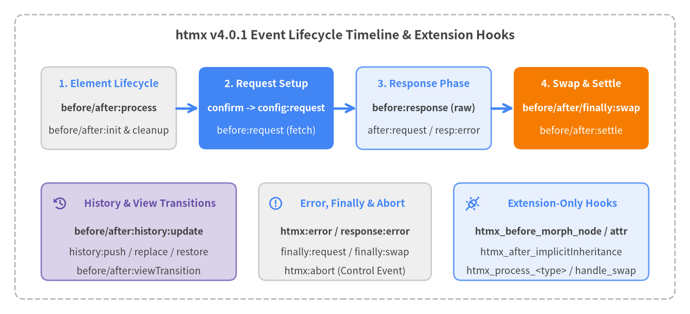

Events & Extension Hooks Reference
htmx v4.0.1 standardizes all DOM lifecycle events around a colon-delimited htmx:phase:action naming convention (replacing htmx 2's camelCase event names such as htmx:afterSwap). Every DOM event is dispatched as a cancelable, composed CustomEvent via htmx.trigger() and simultaneously routed to registered extensions using underscored hook names (htmx_phase_action). In addition, htmx provides five extension-only hooks that execute internally without dispatching a DOM event.

Source Code
from drawlib.canvas import save, setup
from drawlib.icons import phosphor
from drawlib.lines import line
from drawlib.shapes import rectangle
from drawlib.styles import Styles
from drawlib.text import text
setup(width=184, height=84, dpi=150)
# Outer container
rectangle((92, 42), width=176, height=76, style=Styles.MutedDashed.patch(shape_r=2.5))
text(
(92, 74.5),
"htmx v4.0.1 Event Lifecycle Timeline & Extension Hooks",
style=Styles.DarkBold.patch(text_size=13.0),
)
# Top Row: 4 Sequential Lifecycle Stages
rectangle((29, 55), width=36, height=22, style=Styles.Neutral.patch(shape_r=2.0))
text((29, 61.5), "1. Element Lifecycle", style=Styles.PrimaryBold.patch(text_size=10.5))
text((29, 55.0), "before/after:process", style=Styles.DarkBold.patch(text_size=10.0))
text((29, 49.0), "before/after:init & cleanup", style=Styles.Dark.patch(text_size=10.0))
line((47, 55), (53, 55), arrow_head="->", style=Styles.PrimaryBold)
rectangle((71, 55), width=36, height=22, style=Styles.PrimaryFlat.patch(shape_r=2.0))
text((71, 61.5), "2. Request Setup", style=Styles.WhiteBold.patch(text_size=10.5))
text((71, 55.0), "confirm -> config:request", style=Styles.WhiteBold.patch(text_size=10.0))
text((71, 49.0), "before:request (fetch)", style=Styles.White.patch(text_size=10.0))
line((89, 55), (95, 55), arrow_head="->", style=Styles.PrimaryBold)
rectangle((113, 55), width=36, height=22, style=Styles.PrimaryNeutral.patch(shape_r=2.0))
text((113, 61.5), "3. Response Phase", style=Styles.PrimaryBold.patch(text_size=10.5))
text((113, 55.0), "before:response (raw)", style=Styles.DarkBold.patch(text_size=10.0))
text((113, 49.0), "after:request / resp:error", style=Styles.Dark.patch(text_size=10.0))
line((131, 55), (137, 55), arrow_head="->", style=Styles.PrimaryBold)
rectangle((155, 55), width=36, height=22, style=Styles.AccentFlat.patch(shape_r=2.0))
text((155, 61.5), "4. Swap & Settle", style=Styles.WhiteBold.patch(text_size=10.5))
text((155, 55.0), "before/after/finally:swap", style=Styles.WhiteBold.patch(text_size=10.0))
text((155, 49.0), "before/after:settle", style=Styles.White.patch(text_size=10.0))
# Bottom Row: 3 Specialized Event & Hook Channels
rectangle((37, 22), width=52, height=26, style=Styles.SecondaryNeutral.patch(shape_r=2.0))
phosphor.clock_counter_clockwise((16, 29.5), width=4.0, style=Styles.SecondaryBold)
text((40, 29.5), "History & View Transitions", style=Styles.SecondaryBold.patch(text_size=10.5))
text((37, 22.0), "before/after:history:update", style=Styles.DarkBold.patch(text_size=10.0))
text((37, 16.5), "history:push / replace / restore", style=Styles.Dark.patch(text_size=10.0))
text((37, 11.5), "before/after:viewTransition", style=Styles.Dark.patch(text_size=10.0))
rectangle((92, 22), width=46, height=26, style=Styles.Neutral.patch(shape_r=2.0))
phosphor.warning_circle((73.5, 29.5), width=4.0, style=Styles.PrimaryBold)
text((94, 29.5), "Error, Finally & Abort", style=Styles.PrimaryBold.patch(text_size=10.5))
text((92, 22.0), "htmx:error / response:error", style=Styles.DarkBold.patch(text_size=10.0))
text((92, 16.5), "finally:request / finally:swap", style=Styles.Dark.patch(text_size=10.0))
text((92, 11.5), "htmx:abort (Control Event)", style=Styles.Dark.patch(text_size=10.0))
rectangle((147, 22), width=52, height=26, style=Styles.PrimaryNeutral.patch(shape_r=2.0))
phosphor.plugs_connected((126, 29.5), width=4.0, style=Styles.PrimaryBold)
text((150, 29.5), "Extension-Only Hooks", style=Styles.PrimaryBold.patch(text_size=10.5))
text((147, 22.0), "htmx_before_morph_node / attr", style=Styles.DarkBold.patch(text_size=10.0))
text((147, 16.5), "htmx_after_implicitInheritance", style=Styles.Dark.patch(text_size=10.0))
text((147, 11.5), "htmx_process_<type> / handle_swap", style=Styles.Dark.patch(text_size=10.0))
save()
Summary of Events & Extension Hooks#
| Event / Hook | Category | Cancelable | evt.detail Payload / Signature |
|---|---|---|---|
htmx:before:process |
Element Lifecycle | Yes | {} (Record<string, never>) |
htmx:after:process |
Element Lifecycle | No | {} (Record<string, never>) |
htmx:before:init |
Element Lifecycle | Yes | {} (Record<string, never>) |
htmx:after:init |
Element Lifecycle | No | {} (Record<string, never>) |
htmx:before:cleanup |
Element Lifecycle | No | {} (Record<string, never>) |
htmx:after:cleanup |
Element Lifecycle | No | {} (Record<string, never>) |
htmx:before:on:init |
Element Lifecycle | Yes | {} (Record<string, never>) |
htmx:confirm |
Request Lifecycle | Yes | { ctx, issueRequest, dropRequest } |
htmx:config:request |
Request Lifecycle | Yes | { ctx: HtmxRequestCtx } |
htmx:before:request |
Request Lifecycle | Yes | { ctx: HtmxRequestCtx } |
htmx:before:response |
Request Lifecycle | Yes | { ctx: HtmxRequestCtx } |
htmx:after:request |
Request Lifecycle | Yes | { ctx: HtmxRequestCtx } |
htmx:finally:request |
Request Lifecycle | No | { ctx: HtmxRequestCtx } |
htmx:error |
Request Lifecycle | No | { ctx?: HtmxRequestCtx, error: unknown } |
htmx:response:error |
Request Lifecycle | No | { ctx: HtmxRequestCtx } |
htmx:abort |
Request Lifecycle (Control) | — | Dispatched via htmx.trigger(elt, 'htmx:abort') |
htmx:before:swap |
Swap & Settle | Yes | { ctx: HtmxRequestCtx, tasks: any[] } |
htmx:after:swap |
Swap & Settle | No | { ctx: HtmxRequestCtx } |
htmx:finally:swap |
Swap & Settle | No | { ctx: HtmxRequestCtx } |
htmx:before:settle |
Swap & Settle | No | { task, newContent: ChildNode[], settleTasks: any[] } |
htmx:after:settle |
Swap & Settle | No | { task, newContent: ChildNode[], settleTasks: any[] } |
htmx:process:partial |
Swap & Settle | No | { ctx: any, tasks: any[] } |
htmx:before:history:update |
History & Transitions | Yes | { history: HtmxHistoryDetail, sourceElement, response } |
htmx:after:history:update |
History & Transitions | No | { history: HtmxHistoryDetail, sourceElement, response } |
htmx:after:history:push |
History & Transitions | No | { path: string } |
htmx:after:history:replace |
History & Transitions | No | { path: string } |
htmx:before:history:restore |
History & Transitions | Yes | { path: string, cacheMiss: boolean } |
htmx:before:viewTransition |
History & Transitions | No (mutable detail.task) |
{ task: () => Promise<void>, ctx?: HtmxRequestCtx } |
htmx:after:viewTransition |
History & Transitions | No | { task: () => Promise<void>, ctx?: HtmxRequestCtx } |
htmx_before_morph_node |
Extension-Only Hook | Yes (return false) |
(elt, { oldNode, newNode }) => boolean | void |
htmx_before_morph_attr |
Extension-Only Hook | Yes (return false) |
(elt, { attrName, newValue }) => boolean | void |
htmx_after_implicitInheritance |
Extension-Only Hook | No | (elt, { elt, name, parent }) => void |
htmx_process_<type> |
Extension-Only Hook | No | (templateElt, { ctx, tasks }) => void |
handle_swap |
Extension-Only Hook | — | (swapStyle, target, fragment, swapSpec) => boolean | Node[] |
Element Lifecycle Events#
htmx:before:process#
Fires on root at the start of htmx.process(root, force) (after any force cleanup and [hx-ignore] check), before htmx scans root and its descendants for hx-on*, action attributes (hx-get, hx-post, etc.), or hx-boost. Calling evt.preventDefault() (or returning false from htmx_before_process) aborts processing for the entire subtree.
TypeScript Signature
'htmx:before:process': Record<string, never>;
Event Details
| Property | Value |
|---|---|
| Dispatched On | root (Element passed to htmx.process()) |
| Bubbles / Composed | true / true |
| Cancelable | Yes — skips hx-on*, action, and hx-boost initialization on root and its subtree. |
| Extension Hook | htmx_before_process(elt, detail) |
Usage Examples
// Skip htmx processing on elements marked with a custom attribute
htmx.on('htmx:before:process', (evt) => {
if (evt.target.hasAttribute('data-legacy-widget')) {
evt.preventDefault();
}
});
htmx:after:process#
Fires on root at the end of htmx.process(root, force) after all hx-on* handlers, action attributes, and hx-boost elements in the subtree have been initialized. htmx.onLoad(callback) is a convenience wrapper around this event.
TypeScript Signature
'htmx:after:process': Record<string, never>;
Event Details
| Property | Value |
|---|---|
| Dispatched On | root (Element passed to htmx.process()) |
| Bubbles / Composed | true / true |
| Cancelable | No (processing has already completed) |
| Extension Hook | htmx_after_process(elt, detail) |
Usage Examples
htmx.on('htmx:after:process', (evt) => {
console.log('Processed subtree rooted at:', evt.target);
});
htmx:before:init#
Fires on an individual element that carries an action attribute (hx-get, hx-post, hx-put, hx-patch, hx-delete, hx-query, hx-action) or hx-boost immediately before htmx attaches elt._htmx, sets data-htmx-powered="true", and binds trigger listeners. Calling evt.preventDefault() prevents htmx from initializing the element.
TypeScript Signature
'htmx:before:init': Record<string, never>;
Event Details
| Property | Value |
|---|---|
| Dispatched On | The individual Element being initialized |
| Bubbles / Composed | true / true |
| Cancelable | Yes — prevents elt._htmx setup and trigger listener binding on elt. |
| Extension Hook | htmx_before_init(elt, detail) |
Usage Examples
htmx.on('htmx:before:init', (evt) => {
if (evt.target.matches('.readonly-mode [hx-post], .readonly-mode [hx-delete]')) {
evt.preventDefault();
}
});
htmx:after:init#
Fires on an individual element immediately after htmx has initialized elt._htmx, set data-htmx-powered="true", and registered all hx-trigger listeners. Extensions commonly implement htmx_after_init(elt, detail) to inspect custom hx-* attributes on newly initialized elements.
TypeScript Signature
'htmx:after:init': Record<string, never>;
Event Details
| Property | Value |
|---|---|
| Dispatched On | The initialized Element |
| Bubbles / Composed | true / true |
| Cancelable | No |
| Extension Hook | htmx_after_init(elt, detail) |
Usage Examples
// Extension hook initializing a custom attribute on any powered element
htmx.registerExtension('tooltip-init', {
htmx_after_init(elt) {
if (elt.hasAttribute('hx-tooltip')) {
elt.setAttribute('title', elt.getAttribute('hx-tooltip'));
}
}
});
htmx:before:cleanup#
Fires on an element ([data-htmx-powered]) inside __cleanup() right before htmx clears its polling intervals, debounce/throttle timeouts, IntersectionObserver instances, and DOM event listeners. Fired before an element is removed/replaced during a swap or when htmx.process(root, true) forces re-initialization.
TypeScript Signature
'htmx:before:cleanup': Record<string, never>;
Event Details
| Property | Value |
|---|---|
| Dispatched On | The powered Element being cleaned up |
| Bubbles / Composed | true / true |
| Cancelable | No |
| Extension Hook | htmx_before_cleanup(elt, detail) |
Usage Examples
// Clean up extension-managed resources attached to elt._htmx
htmx.registerExtension('custom-stream', {
htmx_before_cleanup(elt) {
elt._htmx?.customSocket?.close();
}
});
htmx:after:cleanup#
Fires on an element inside __cleanup() immediately after htmx has disconnected all internal timers, observers, and event listeners and removed the data-htmx-powered attribute.
TypeScript Signature
'htmx:after:cleanup': Record<string, never>;
Event Details
| Property | Value |
|---|---|
| Dispatched On | The cleaned-up Element |
| Bubbles / Composed | true / true |
| Cancelable | No |
| Extension Hook | htmx_after_cleanup(elt, detail) |
Usage Examples
htmx.on('htmx:after:cleanup', (evt) => {
console.debug('Cleaned up htmx state on:', evt.target);
});
htmx:before:on:init#
Fires on an element carrying one or more hx-on* attributes (hx-on:click, hx-on::after:swap, hx-on="...") inside htmx.process() right before htmx parses and registers the inline event handlers. Calling evt.preventDefault() prevents hx-on* handlers from being bound on that element.
TypeScript Signature
'htmx:before:on:init': Record<string, never>;
Event Details
| Property | Value |
|---|---|
| Dispatched On | The Element carrying hx-on* attributes |
| Bubbles / Composed | true / true |
| Cancelable | Yes — skips __handleHxOnAttributes(node) for this element. |
| Extension Hook | htmx_before_on_init(elt, detail) |
Usage Examples
// Block inline hx-on handlers inside untrusted user-content containers
htmx.on('htmx:before:on:init', (evt) => {
if (evt.target.closest('.untrusted-preview')) {
evt.preventDefault();
}
});
Request Lifecycle Events#
htmx:confirm#
Fires inside __issueRequest(ctx) when ctx.confirm (from hx-confirm) is present on sourceElement, before indicators or timeouts are started and before fetch() is called. Call evt.preventDefault() to suppress the default window.confirm() dialog (or js: evaluation) and implement a custom asynchronous confirmation modal—then call evt.detail.issueRequest() to proceed or evt.detail.dropRequest() to cancel.
TypeScript Signature
'htmx:confirm': {
ctx: HtmxRequestCtx;
/** Call to proceed with the request */
issueRequest: () => void;
/** Call to cancel the request */
dropRequest: () => void;
};
Detail Payload
| Property | Type | Description |
|---|---|---|
ctx |
HtmxRequestCtx |
Full request context (ctx.confirm holds the hx-confirm string). |
issueRequest |
() => void |
Resolves the confirmation Promise with true, continuing the request. |
dropRequest |
() => void |
Resolves the confirmation Promise with false, cleanly aborting before fetch(). |
Usage Examples
// Replace native window.confirm() with a custom async <dialog>
htmx.on('htmx:confirm', (evt) => {
const { ctx, issueRequest, dropRequest } = evt.detail;
evt.preventDefault(); // Prevent default window.confirm()
showCustomDialog(ctx.confirm).then((confirmed) => {
if (confirmed) issueRequest();
else dropRequest();
});
});
htmx:config:request#
Fires after form values, hx-include, hx-vals, and hx-headers have been collected into ctx.request.body (FormData) and ctx.request.headers, but before URL query encoding (GET/DELETE) or URLSearchParams conversion and before hx-sync queueing. This is the primary hook for mutating ctx.request.headers, ctx.request.body, or ctx.request.action. Cancel with evt.preventDefault() to abort the request before queueing.
TypeScript Signature
'htmx:config:request': { ctx: HtmxRequestCtx };
Detail Payload
| Property | Type | Description |
|---|---|---|
ctx |
HtmxRequestCtx |
Request context where ctx.request.body is still a mutable FormData instance and ctx.request.headers is a plain Record<string, string>. |
Usage Examples
htmx.on('htmx:config:request', (evt) => {
const { request } = evt.detail.ctx;
request.headers['Authorization'] = `Bearer ${getAuthToken()}`;
if (request.body instanceof FormData) {
request.body.append('locale', document.documentElement.lang || 'en');
}
});
htmx:before:request#
Fires immediately before ctx.fetch(ctx.request.action, ctx.request) is called—after hx-sync queue admission, htmx:confirm, timeout initialization, htmx-request indicator activation, hx-disable element disabling, and HX-Request-Type header calculation ("full" vs "partial"). Calling evt.preventDefault() cancels the fetch() call while still running the finally cleanup (htmx:finally:request, hiding indicators, re-enabling elements).
TypeScript Signature
'htmx:before:request': { ctx: HtmxRequestCtx };
Detail Payload
| Property | Type | Description |
|---|---|---|
ctx |
HtmxRequestCtx |
Finalized request context right before ctx.fetch() executes. Extensions can override ctx.fetch here. |
Usage Examples
htmx.on('htmx:before:request', (evt) => {
console.info(`Sending ${evt.detail.ctx.request.method} to ${evt.detail.ctx.request.action}`);
});
htmx:before:response#
Fires immediately after await ctx.fetch(...) resolves and HX-* response headers are extracted into ctx.hx, before htmx consumes the response body via await response.text(). At this point ctx.response.raw is the unconsumed native Fetch Response. Calling evt.preventDefault() skips reading response.text() and skips swapping—used by streaming extensions (hx-multipart, hx-download) that read ctx.response.raw.body directly.
TypeScript Signature
'htmx:before:response': { ctx: HtmxRequestCtx };
Detail Payload
| Property | Type | Description |
|---|---|---|
ctx |
HtmxRequestCtx |
Context populated with ctx.response ({ raw, status, headers }) and ctx.hx (parsed HX-* headers), prior to body consumption. |
Usage Examples
// Intercept a streaming response before htmx calls response.text()
htmx.on('htmx:before:response', (evt) => {
const { ctx } = evt.detail;
if (ctx.response?.headers.get('Content-Type')?.startsWith('multipart/mixed')) {
evt.preventDefault();
ctx.extensionPromise = consumeMultipartStream(ctx.response.raw);
}
});
htmx:after:request#
Fires after ctx.text = await response.text() completes, before htmx:response:error (for HTTP >= 400), HX-Refresh / HX-Redirect / HX-Location headers, and htmx.swap(ctx). You can inspect or mutate ctx.text here to transform the server response before DOM parsing, or call evt.preventDefault() to stop further response handling and swapping.
TypeScript Signature
'htmx:after:request': { ctx: HtmxRequestCtx };
Detail Payload
| Property | Type | Description |
|---|---|---|
ctx |
HtmxRequestCtx |
Request context with ctx.response and ctx.text (the full response HTML string) populated. |
Usage Examples
htmx.on('htmx:after:request', (evt) => {
const { ctx } = evt.detail;
console.log(`Received ${ctx.text?.length ?? 0} bytes with status ${ctx.response?.status}`);
});
htmx:finally:request#
Fires in the finally block of __issueRequest(ctx) whenever an admitted request completes, errors, times out, or is aborted (after any ctx.extensionPromise settles and after HX-Trigger response headers are processed, right before indicators and disabled elements are restored). Does not fire if a request was dropped before entering __issueRequest (e.g., cancelled in htmx:config:request or dropped by hx-sync).
TypeScript Signature
'htmx:finally:request': { ctx: HtmxRequestCtx };
Detail Payload
| Property | Type | Description |
|---|---|---|
ctx |
HtmxRequestCtx |
Request context reflecting final ctx.status ("swapped", "issuing", or "error: ..."). |
Usage Examples
htmx.on('htmx:finally:request', (evt) => {
const { ctx } = evt.detail;
performance.mark(`htmx-end-${ctx.request.action}`);
});
htmx:error#
Fires when a network failure, request timeout (ctx.request.signal.reason === 'timeout'), invalid expression evaluation, or swap exception occurs, consolidating htmx 2's separate htmx:sendError, htmx:swapError, htmx:timeout, and htmx:targetError events. Note: user-initiated aborts (AbortError without 'timeout' reason) do not fire htmx:error, and HTTP 4xx/5xx status codes fire htmx:response:error instead. Automatically logged via console.error.
TypeScript Signature
'htmx:error': { ctx?: HtmxRequestCtx; error: unknown };
Detail Payload
| Property | Type | Description |
|---|---|---|
ctx |
HtmxRequestCtx | undefined |
Request context (present when the error occurred during request/swap execution; absent if the error occurred during hx-on or context creation). |
error |
unknown |
The thrown Error, DOMException, or timeout reason. |
Usage Examples
htmx.on('htmx:error', (evt) => {
const { ctx, error } = evt.detail;
showToastNotification(`Network or runtime error: ${error?.message || error}`, 'error');
});
htmx:response:error#
Fires immediately after htmx:after:request when the server responds with an HTTP status code of 400 or higher (ctx.response.status >= 400). In htmx v4, unless ctx.response.status matches htmx.config.noSwap or hx-status:XXX="swap:none", htmx will still proceed to swap the error response HTML after firing htmx:response:error.
TypeScript Signature
'htmx:response:error': { ctx: HtmxRequestCtx };
Detail Payload
| Property | Type | Description |
|---|---|---|
ctx |
HtmxRequestCtx |
Request context containing ctx.response.status (>= 400), ctx.response.headers, and ctx.text. |
Usage Examples
htmx.on('htmx:response:error', (evt) => {
const { status } = evt.detail.ctx.response;
if (status === 401) {
window.location.href = '/login';
}
});
htmx:abort#
A control event that you dispatch onto an element (using htmx.trigger(elt, 'htmx:abort')) to abort its currently running request via its RequestQueue. Unlike other htmx:* events, htmx listens for htmx:abort on initialized requesting elements rather than emitting it.
TypeScript Signature
'htmx:abort': Record<string, never>;
Control Event Details
| Property | Value |
|---|---|
| Target Element | The element (or hx-sync coordinator element) whose in-flight request should be aborted. |
| How to Dispatch | htmx.trigger('#element-id', 'htmx:abort') |
| Behavior | Calls requestQueue.abort() -> ctx.request.abort(). Because the abort reason is not 'timeout', htmx:error is not fired, and htmx:finally:request cleans up indicators and advances the queue. |
Usage Examples
<button id="report-btn" hx-get="/reports/heavy" hx-target="#output">
Run Heavy Query
</button>
<button type="button" onclick="htmx.trigger('#report-btn', 'htmx:abort')">
Cancel Query
</button>
Swap & Settle Events#
htmx:before:swap#
Fires inside htmx.swap(ctx) after the response HTML has been parsed into a fragment and all OOB (hx-swap-oob), <hx-partial>, and main swap tasks have been assembled into the tasks array, but before browser history is updated or any DOM nodes are modified. You can inspect or mutate evt.detail.tasks or call evt.preventDefault() to cancel the swap and history update entirely.
TypeScript Signature
'htmx:before:swap': { ctx: HtmxRequestCtx; tasks: any[] };
Detail Payload
| Property | Type | Description |
|---|---|---|
ctx |
HtmxRequestCtx |
Request or swap context (includes extracted ctx.title). |
tasks |
Array<{ type: 'main' | 'oob' | 'partial', fragment: DocumentFragment, target: Element, swapSpec: object, sourceElement: Element }> |
Ordered list of swap tasks scheduled to execute. |
Usage Examples
htmx.on('htmx:before:swap', (evt) => {
const { ctx, tasks } = evt.detail;
console.log(`Executing ${tasks.length} swap task(s) for`, ctx.sourceElement);
});
htmx:after:swap#
Fires on ctx.sourceElement (or mainSwap.target if ctx.sourceElement was replaced/disconnected by the swap) after all swap tasks (__insertContent) and settle tasks have completed, right before document.title and #anchor scrolling are applied.
TypeScript Signature
'htmx:after:swap': { ctx: HtmxRequestCtx };
Detail Payload
| Property | Type | Description |
|---|---|---|
ctx |
HtmxRequestCtx |
Swap/request context after all DOM insertions have finished. |
Usage Examples
<!-- Inline hx-on handler using shorthand double-colon syntax -->
<form hx-post="/comments"
hx-target="#comment-list"
hx-swap="beforeend"
hx-on::after:swap="this.reset()">
<input name="body" required>
<button type="submit">Post</button>
</form>
htmx:finally:swap#
Fires in the finally block of htmx.swap(ctx) regardless of whether the swap completed normally, was cancelled in htmx:before:swap, or threw an error.
TypeScript Signature
'htmx:finally:swap': { ctx: HtmxRequestCtx };
Detail Payload
| Property | Type | Description |
|---|---|---|
ctx |
HtmxRequestCtx |
Swap/request context at the end of htmx.swap(). |
Usage Examples
htmx.on('htmx:finally:swap', (evt) => {
unlockScrollPosition();
});
htmx:before:settle#
Fires on task.target inside __insertContent() for each individual swap task (main, OOB, or partial) immediately after the new DOM nodes have been inserted and [hx-preserve] elements restored, but before .htmx-added and .htmx-settling classes are applied and before CSS transition settleTasks run.
TypeScript Signature
'htmx:before:settle': {
task: any;
newContent: ChildNode[];
settleTasks: any[];
};
Detail Payload
| Property | Type | Description |
|---|---|---|
task |
object |
The individual swap task ({ type, fragment, target, swapSpec, sourceElement }). |
newContent |
ChildNode[] |
Array of newly inserted DOM nodes in task.target. |
settleTasks |
Array<() => void> |
Attribute-restoration callbacks that will run after settleDelay to trigger CSS transitions. |
Usage Examples
htmx.on('htmx:before:settle', (evt) => {
const { newContent } = evt.detail;
// Prepare newly inserted nodes before CSS transitions trigger
for (const node of newContent) {
if (node instanceof HTMLElement) {
node.dataset.insertedAt = String(Date.now());
}
}
});
htmx:after:settle#
Fires on task.target after the settle delay (settle:<time> or htmx.config.defaultSettleDelay) has elapsed and all settleTasks have restored final CSS attributes (class, style, width, height), right before .htmx-added is removed and htmx.process() is called on newContent.
TypeScript Signature
'htmx:after:settle': {
task: any;
newContent: ChildNode[];
settleTasks: any[];
};
Detail Payload
| Property | Type | Description |
|---|---|---|
task |
object |
The completed swap task object. |
newContent |
ChildNode[] |
Array of newly inserted DOM nodes. |
settleTasks |
Array<() => void> |
Completed CSS transition callbacks. |
Usage Examples
htmx.on('htmx:after:settle', (evt) => {
console.log('Settle complete on target:', evt.target);
});
htmx:process:partial#
Built-in TypeScript event map entry representing the <hx-partial> template processing pattern (htmx:process:{type}). Note that in src/htmx.js, standard <hx-partial> elements are handled natively inside __processPartials(), while custom <hx-mytype> or <template hx type="mytype"> tags invoke extension hooks matching htmx_process_<type> with { ctx, tasks }.
TypeScript Signature
'htmx:process:partial': { ctx: any; tasks: any[] };
Detail Payload
| Property | Type | Description |
|---|---|---|
ctx |
HtmxRequestCtx |
Active swap/request context. |
tasks |
any[] |
Mutable swap task queue where custom partial tasks can be pushed. |
Usage Examples
<!-- Built-in <hx-partial> element processed during htmx.swap() -->
<hx-partial hx-target="#sidebar-count" hx-swap="innerHTML">
<span class="badge">12</span>
</hx-partial>
History & View Transition Events#
htmx:before:history:update#
Fires on document inside __handleHistoryUpdate(ctx) before history.pushState() or history.replaceState() is executed. You can mutate evt.detail.history.path or evt.detail.history.type, or call evt.preventDefault() to cancel the browser history update for this swap.
TypeScript Signature
'htmx:before:history:update': {
history: HtmxHistoryDetail; // { type: 'push' | 'replace', path: string }
sourceElement: Element;
response: HtmxResponse;
};
Detail Payload
| Property | Type | Description |
|---|---|---|
history |
HtmxHistoryDetail |
{ type: 'push' | 'replace', path: string }. Mutable before the history call runs. |
sourceElement |
Element |
Element that initiated the request/swap. |
response |
HtmxResponse |
Server response object ({ raw, status, headers }). |
Usage Examples
// Strip transient tracking query parameters before pushing URLs to browser history
htmx.on('htmx:before:history:update', (evt) => {
const url = new URL(evt.detail.history.path, location.origin);
url.searchParams.delete('_utm');
evt.detail.history.path = url.pathname + url.search + url.hash;
});
htmx:after:history:update#
Fires on document immediately after history.pushState() or history.replaceState() (and the corresponding htmx:after:history:push or htmx:after:history:replace event) has completed.
TypeScript Signature
'htmx:after:history:update': {
history: HtmxHistoryDetail;
sourceElement: Element;
response: HtmxResponse;
};
Detail Payload
| Property | Type | Description |
|---|---|---|
history |
HtmxHistoryDetail |
{ type: 'push' | 'replace', path: string } that was committed to window.history. |
sourceElement |
Element |
Element that initiated the request/swap. |
response |
HtmxResponse |
Server response object. |
Usage Examples
htmx.on('htmx:after:history:update', (evt) => {
analytics.pageView(evt.detail.history.path);
});
htmx:after:history:push#
Fires on document immediately after history.pushState({ htmx: true }, '', path) creates a new browser history entry.
TypeScript Signature
'htmx:after:history:push': { path: string };
Detail Payload
| Property | Type | Description |
|---|---|---|
path |
string |
URL path pushed into window.history. |
Usage Examples
htmx.on('htmx:after:history:push', (evt) => {
console.log('Pushed history path:', evt.detail.path);
});
htmx:after:history:replace#
Fires on document immediately after history.replaceState({ htmx: true }, '', path) replaces the current browser history entry.
TypeScript Signature
'htmx:after:history:replace': { path: string };
Detail Payload
| Property | Type | Description |
|---|---|---|
path |
string |
URL path that replaced the current entry in window.history. |
Usage Examples
htmx.on('htmx:after:history:replace', (evt) => {
console.log('Replaced history path:', evt.detail.path);
});
htmx:before:history:restore#
Fires on document when the user traverses browser history (Back/Forward via Navigation API navigate or popstate), before htmx restores [hx-history-elt] or document.body via AJAX (or location.reload() when htmx.config.history === 'reload'). Core htmx always passes cacheMiss: true; caching extensions like hx-history-cache intercept this event, restore from sessionStorage, and cancel the default network fetch via evt.preventDefault() or detail.cancelled = true.
TypeScript Signature
'htmx:before:history:restore': { path: string; cacheMiss: boolean };
Detail Payload
| Property | Type | Description |
|---|---|---|
path |
string |
The URL path (location.pathname + location.search) being restored. |
cacheMiss |
boolean |
Always true when emitted by htmx core. |
Usage Examples
htmx.on('htmx:before:history:restore', (evt) => {
console.log('Restoring history state for path:', evt.detail.path);
});
htmx:before:viewTransition#
Fires on ctx.sourceElement immediately before document.startViewTransition(detail.task) is invoked for a swap task with View Transitions enabled (htmx.config.transitions = true or hx-swap="... transition:true"). You can wrap or replace evt.detail.task before startViewTransition executes.
TypeScript Signature
'htmx:before:viewTransition': { task: () => Promise<void> };
Detail Payload
| Property | Type | Description |
|---|---|---|
task |
() => Promise<void> |
Async callback passed to document.startViewTransition(detail.task) that performs the DOM insertion. |
ctx |
HtmxRequestCtx |
Runtime swap/request context (src/htmx.js line 2308). |
Usage Examples
htmx.on('htmx:before:viewTransition', (evt) => {
document.documentElement.classList.add('vt-active');
});
htmx:after:viewTransition#
Fires on ctx.sourceElement after await document.startViewTransition(detail.task).finished resolves.
TypeScript Signature
'htmx:after:viewTransition': { task: () => Promise<void> };
Detail Payload
| Property | Type | Description |
|---|---|---|
task |
() => Promise<void> |
The transition task callback that finished executing. |
ctx |
HtmxRequestCtx |
Runtime swap/request context. |
Usage Examples
htmx.on('htmx:after:viewTransition', (evt) => {
document.documentElement.classList.remove('vt-active');
});
Extension-Only Hooks#
The following five hooks are invoked directly via __triggerExtensions() or __extMethods on extensions registered with htmx.registerExtension() and are never dispatched as DOM events.
htmx_before_morph_node#
Invoked on registered extensions inside __morphNode(oldNode, newNode, ctx) right before htmx copies attributes and morphs children from newNode into oldNode. Returning false (or setting detail.cancelled = true) skips morphing oldNode and its subtree, preserving the existing DOM node untouched.
Hook Signature
htmx_before_morph_node?: (
elt: Element,
detail: { oldNode: Element; newNode: Element; cancelled?: boolean }
) => boolean | void;
Parameters
| Parameter | Type | Description |
|---|---|---|
elt |
Element |
The existing DOM node (oldNode) about to be morphed. |
detail.oldNode |
Element |
The existing live DOM element in the document. |
detail.newNode |
Element |
The candidate replacement element from the incoming fragment. |
| Returns | boolean | void |
Return false (or set detail.cancelled = true) to freeze oldNode during morphing. |
Usage Examples
htmx.registerExtension('preserve-dirty-inputs', {
htmx_before_morph_node(elt, detail) {
if (detail.oldNode.matches('input[data-dirty="true"]')) {
return false; // Keep user-modified input untouched during morph
}
}
});
htmx_before_morph_attr#
Invoked on registered extensions inside __copyAttributes(destination, source) before an individual attribute is set (newValue: string) or removed (newValue: null) on destination. Returning false (or setting detail.cancelled = true) prevents that specific attribute from being updated or removed.
Hook Signature
htmx_before_morph_attr?: (
elt: Element,
detail: { attrName: string; newValue: string | null; cancelled?: boolean }
) => boolean | void;
Parameters
| Parameter | Type | Description |
|---|---|---|
elt |
Element |
The destination DOM element whose attribute is being updated or removed. |
detail.attrName |
string |
Name of the attribute being morphed. |
detail.newValue |
string | null |
New attribute string value from source, or null when the attribute is being removed. |
| Returns | boolean | void |
Return false to keep the existing attribute value on elt. |
Usage Examples
htmx.registerExtension('keep-aria-expanded', {
htmx_before_morph_attr(elt, { attrName }) {
if (attrName === 'aria-expanded' && elt.hasAttribute('data-client-controlled')) {
return false; // Preserve client-toggled aria-expanded state
}
}
});
htmx_after_implicitInheritance#
Invoked on registered extensions inside __attributeValue() whenever an element inherits an hx-* attribute from an ancestor element because htmx.config.implicitInheritance is set to true. Useful for migration tooling or auditing which elements rely on legacy implicit inheritance.
Hook Signature
htmx_after_implicitInheritance?: (
elt: Element,
detail: { elt: Element; name: string; parent: Element; cancelled?: boolean }
) => void;
Parameters
| Parameter | Type | Description |
|---|---|---|
elt |
Element |
Child element that inherited the attribute. |
detail.elt |
Element |
Child element that inherited the attribute. |
detail.name |
string |
Name of the inherited attribute (e.g., "hx-target", "hx-swap"). |
detail.parent |
Element |
Ancestor element from which the attribute value was resolved. |
Usage Examples
// Log warnings during htmx 2 -> htmx 4 migration when implicit inheritance is triggered
htmx.registerExtension('inheritance-audit', {
htmx_after_implicitInheritance(elt, { name, parent }) {
console.warn(`Implicitly inherited ${name} on`, elt, 'from', parent, `— add ${name}:inherited to parent`);
}
});
htmx_process_<type>#
Invoked on registered extensions inside __processPartials(fragment, ctx) when htmx encounters any <hx-type> custom tag (which __makeFragment() converts into <template hx type="<type>">) or an explicit <template hx type="<type>"> where type !== "partial". Used by extensions like hx-upsert.js (htmx_process_upsert) to push custom swap tasks into detail.tasks.
Hook Signature
[hookName: `htmx_process_${string}`]: (
templateElt: HTMLTemplateElement,
detail: { ctx: HtmxRequestCtx; tasks: any[]; cancelled?: boolean }
) => void;
Parameters
| Parameter | Type | Description |
|---|---|---|
templateElt |
HTMLTemplateElement |
The <template hx type="<type>"> element extracted from the response fragment (removed automatically after the hook runs). |
detail.ctx |
HtmxRequestCtx |
Active swap/request context. |
detail.tasks |
any[] |
Swap tasks array. Push { type, fragment, target, swapSpec, sourceElement } objects here to schedule DOM insertions. |
Usage Examples
// Handle <hx-toast>...</hx-toast> tags in server responses
htmx.registerExtension('hx-toast', {
htmx_process_toast(templateElt, { ctx, tasks }) {
const container = document.querySelector('#toast-container');
if (container) {
tasks.push({
type: 'toast',
fragment: templateElt.content.cloneNode(true),
target: container,
swapSpec: { style: 'beforeend' },
sourceElement: ctx.sourceElement
});
}
}
});
handle_swap#
Invoked directly on registered extensions inside __insertContent(task) when swapSpec.style does not match any built-in swap strategy (innerHTML, outerHTML, outerSync, innerMorph, outerMorph, textContent, beforebegin, afterbegin, beforeend, afterend, delete, none). Used by extensions like hx-download (hx-swap="download") and hx-upsert (hx-swap="upsert").
Hook Signature
handle_swap?: (
swapStyle: string,
target: Element,
fragment: DocumentFragment,
swapSpec: Record<string, any>
) => boolean | Node[];
Parameters
| Parameter | Type | Description |
|---|---|---|
swapStyle |
string |
Normalized custom swap style name (e.g., "upsert", "download"). |
target |
Element |
Resolved target DOM element. |
fragment |
DocumentFragment |
Parsed DocumentFragment containing the response nodes. |
swapSpec |
Record<string, any> |
Parsed swap specification object including any HCON modifiers (swap, settle, scroll, etc.). |
| Returns | boolean | Node[] |
Return false if this extension does not handle swapStyle. Return true if handled, or return an array of inserted Node[] so htmx runs .htmx-added, htmx.process(), and autofocus on those nodes. |
Usage Examples
// Custom swap strategy: hx-swap="replace-first"
htmx.registerExtension('replace-first-swap', {
handle_swap(swapStyle, target, fragment, swapSpec) {
if (swapStyle !== 'replace-first') return false;
const inserted = [...fragment.childNodes];
if (target.firstElementChild) {
target.firstElementChild.replaceWith(fragment);
} else {
target.append(fragment);
}
return inserted;
}
});